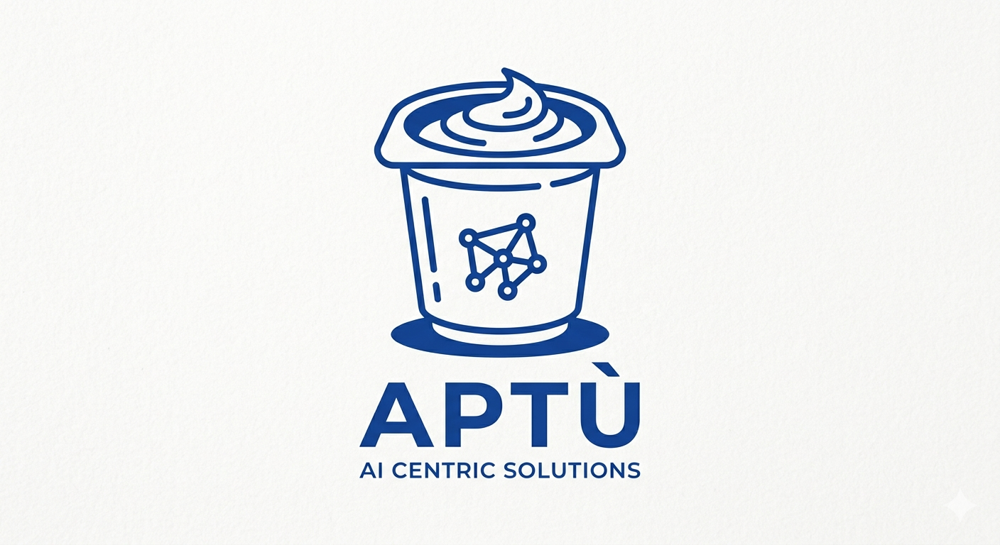

AI Centric Solutions
Something good is fermenting.
The best things need time to culture.
We're growing tools worth using —
not just shipping for the sake of it.
// first release: when it's ready. not before.
← return to system